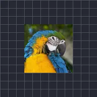

Przekształcenie rastra

Skaluje, obraca i przesuwa gotowy obraz warstwy, po efektach nad nim, dzięki czemu ich wynik też można przekształcić. Wypełnienie zachowuje część oryginału pod spodem, a Maskuj do warstwy trzyma wynik wewnątrz oryginalnego kształtu.
Ustawienia
| Ustawienie | Typ | Zakres | Domyślnie |
|---|---|---|---|
| Skala | Liczba | Od 0.01 do 50 | 1 |
| Kąt | Kąt | Od -3600° do 3600° | 0° |
| Przesunięcie | Punkt (X, Y) | Od -5000 px do 5000 px | 0 px, 0 px |
| Maskuj do warstwy | Włączone lub wyłączone | – | Wył. |
| Alfa | Liczba | Od 0% do 100% | 100% |
| Wypełnienie | Liczba | Od 0% do 100% | 0% |
| Próbkowanie | Wybór | Najbliższe, Liniowe | Liniowe |